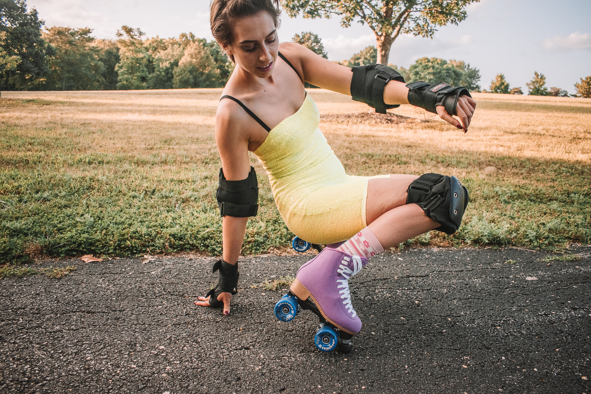
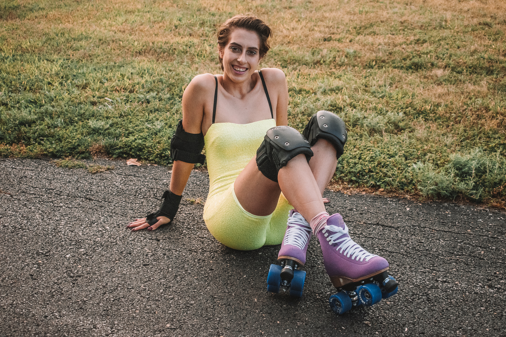
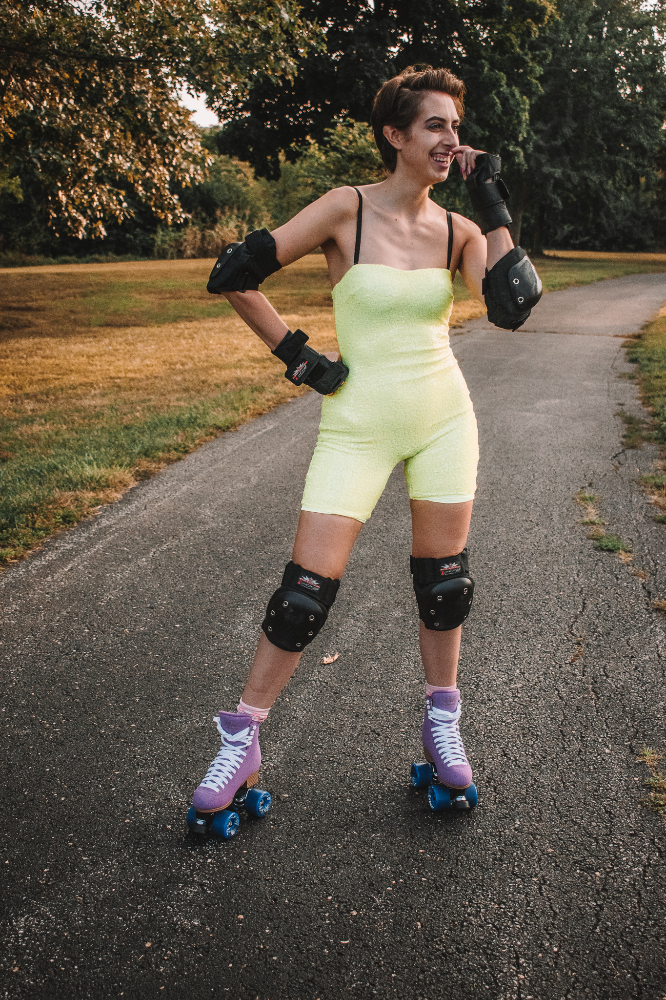

My Roller Skating Journey
A Tale As Old As Grind
It seems dramatic to say that some Instagram story changed everything, but in this case, it's pretty much true. I had never even heard of the term "jam skate" and had certainly never seen anything quite like what I was watching. It was dance on wheels and I was hooked. The obligatory rabbit hole followed of course, video after video, tutorials, outtakes, and compilations, oh my! I, of course, soon broke out my hard-shell roller blades, circa 2000, just to see if I still had anything in me from my 10-year-old summertime driveway romps.
That First Time
It was NOT PRETTY, y'all! I ate it. I fell, I scared myself. BUT some familiar feelings came out during that first roll. Not only did I feel certain muscles and sensations awaken and remember how to make my body move certain ways, but a deeper familiarty came over me, too. A creeping feeling of joy, and more than joy, release. I knew this wasn't going to be a one time thing.

Practice Makes...Well
I took those old blades out onto an outdoor rink one night later in the week with a friend.
She had also just picked up skating and was probably happy to have company who couldn't judge her...because I was worse.
Again, I fell a few times; scared myself more times.
But I picked up on something really important (besides how to stop).
You CANNOT be afraid of falling.

Rolling Forward. And Backward, too!
Once I embraced the idea that I was definitely going to fall, but that it would be ok, I was really able to move forward and learn new skills.
I tried skating on one foot, I tried skating backwards, I tried jumping.
I bought my own pair of brand new purple roller skates from the local skate shop, Legacy Skates, and kept on rolling.
I skate at least a few times a week, between Adult Nights at old school rinks, to late nights at outdoor parks, to the street outside my house.
I even bring my skates to my work on nights I close and break them out after everyone else has left!
I swear, nothing beats seeing the faces of observers light up as I pass.
And not because I look cool, or I have neat tricks. Because I am certainly not there yet.
But I think because there's a spark of a memory, maybe a summertime driveway, somewhere with them too.